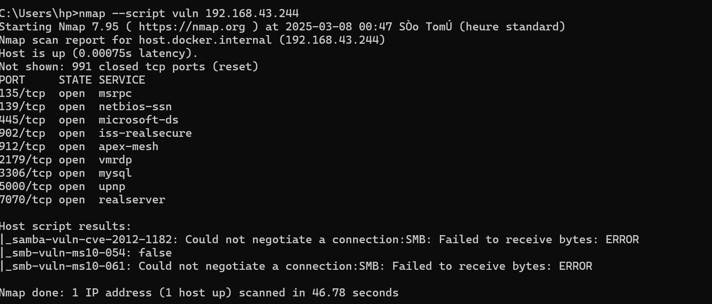
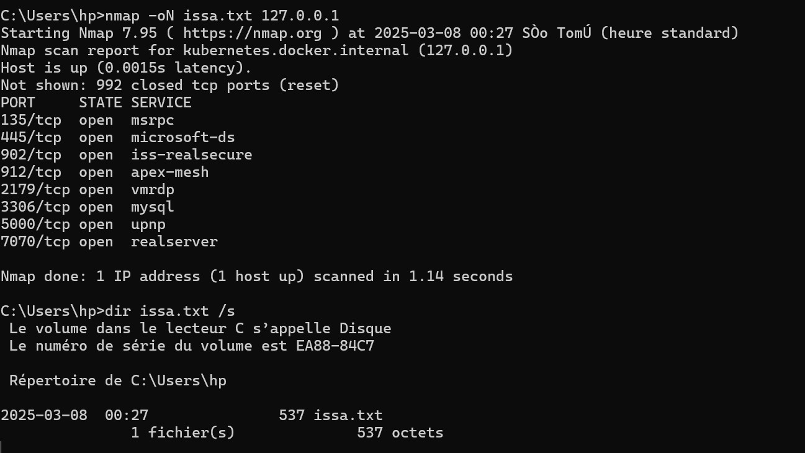
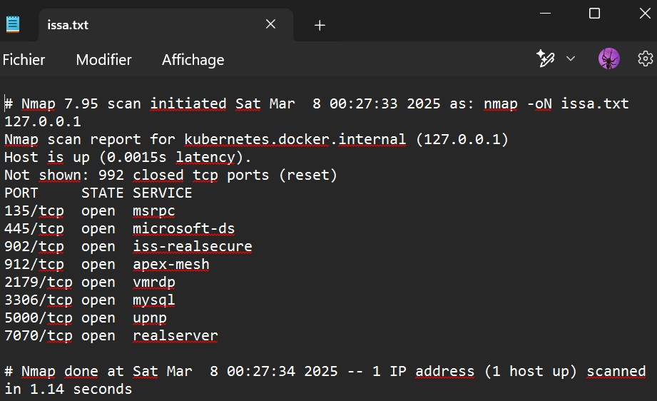

Introduction à Dnsmasq
Comment configurer un serveur léger DNS et DHCP alias Dnsmasq ?
DnsMasq est un petit serveur DNS (cache DNS) qui intègre un serveur DHCP. Peu gourmand en ressources et très simple à configurer, il est bien adapté à une installation sur une solution embarquée telle qu'un routeur ou point d'accès wifi (sous OpenWRT par exemple).
Pour la résolution des noms, il se base sur les DNS déclarés dans la configuration réseau (/etc/resolv.conf) ou sur le fichier /etc/hosts. Ce qui est bien pratique pour configurer une petite zone LAN : il suffit d'éditer le fichier /etc/hosts comme nous le ferions pour une seule machine.
Côté serveur DHCP, la configuration minimale se passe dans le fichier /etc/dnsmasq.conf où l'on devra configurer la plage DHCP, l'adresse d'un serveur DNS et une route par défaut (gateway).
Installation
Désactiver systemd-resolved
On désactive la résolution DNS de systemd-resolved. Pour cela on édite avec les droits d'administrateur le fichier /etc/systemd/resolved.conf :
[Resolve] DNSStubListener=no

Puis on relance le service :
sudo systemctl restart systemd-resolved
Installer Dnsmasq
sudo apt-get install dnsmasq

Configuration
Pour configurer Dnsmasq, on édite le fichier /etc/dnsmasq.conf. Voici un exemple complet pour un réseau simple :
domain-needed bogus-priv filterwin2k localise-queries local=/lan/ domain=local.lan expand-hosts no-negcache resolv-file=/tmp/resolv.conf.auto dhcp-authoritative dhcp-leasefile=/tmp/dhcp.leases # use /etc/ethers for static hosts; same format as --dhcp-host read-ethers # Plage DHCP dhcp-range=192.168.1.100,192.168.1.150,12h # Netmask dhcp-option=1,255.255.255.0 # Route par défaut (gateway) dhcp-option=3,192.168.1.1

Fichier /etc/resolv.conf
# Le nom de domaine local (n'existe pas sur internet) domain local.lan # Où les clients doivent chercher les pc sur le réseau local search local.lan # Serveur dns primaire nameserver 10.0.2.3

Fichier /etc/hosts
127.0.0.1 localhost 127.0.1.1 client-desktop 192.168.1.1 mail 192.168.1.1 mail.local.lan

Dans l'exemple ci-dessus, l'ordinateur 192.168.1.1 aura comme nom DNS mail et mail.local.lan. Pas besoin d'ajouter tous les ordinateurs — ceux ayant fait une demande DHCP auront leur nom DNS directement configuré.
Appliquer la nouvelle configuration
sudo /etc/init.d/dnsmasq restart

Résolution de conflits (Port 53)
Si dnsmasq ne démarre pas, un autre service occupe peut-être le port 53. Suivez les étapes ci-dessous pour le résoudre.

sudo lsof -i :53
sudo systemctl stop systemd-resolved
sudo systemctl disable systemd-resolved
sudo systemctl restart dnsmasq
IP statique & Cache DNS
Fixer une adresse IP à un client
On ajoute dans /etc/dnsmasq.conf la ligne suivante (MAC adresse → IP fixe) :
dhcp-host=00:08:27:15:e4:fe,192.168.1.2

Configurer le cache DNS
Éditer /etc/dnsmasq.conf et décommenter la directive listen-address :
# Cache DNS pour localhost uniquement : listen-address=127.0.0.1 # Pour écouter aussi sur l'IP LAN : listen-address=192.168.1.1 # Plusieurs adresses (séparées par virgule) : listen-address=127.0.0.1,192.168.1.1

Bloquer un domaine avec Dnsmasq
Éditer /etc/NetworkManager/dnsmasq.d/local et ajouter les règles de blocage :
# Modèle : address=/sousdomaine.domaine/127.0.0.1 # Bloquer tous les domaines .io : address=/.io/127.0.0.1 # Bloquer facebook.com : address=/facebook.com/127.0.0.1
Tests côté machine cliente
Test de connectivité réseau
# Pinger le routeur : ping 192.168.43.1 # Pinger le nameserver : ping 10.0.2.3


Nous avons au préalable changé le nameserver du client par le nôtre :

Test de résolution DNS
nslookup google.com

Serveur NFS — Installation & Configuration
NFS (Network File Share) est un protocole qui vous permet de partager des répertoires et des fichiers avec d'autres clients Linux dans un réseau. Il s'avère pratique lorsque vous devez partager des données communes entre les systèmes clients, en particulier lorsqu'ils manquent d'espace.
sudo apt update sudo apt install nfs-kernel-server

Si l'installation échoue, vérifiez d'abord vos interfaces réseau avec ip a, puis modifiez /etc/resolv.conf en utilisant les DNS publics de Google :
nameserver 8.8.8.8 nameserver 8.8.4.4
sudo systemctl restart NetworkManager sudo systemctl restart dnsmasq
sudo mkdir -p /mnt/nfs_share sudo chown -R nobody:nogroup /mnt/nfs_share/ sudo chmod 777 /mnt/nfs_share/

sudo vim /etc/exports
Ajouter dans le fichier /etc/exports :
# Accès pour tout un sous-réseau : /mnt/nfs_share 192.168.43.0/24(rw,sync,no_subtree_check) # Accès pour un seul client : /mnt/nfs_share client_IP_1(rw,sync,no_subtree_check) # Accès pour plusieurs clients : /mnt/nfs_share client_IP_1(rw,sync,no_subtree_check) /mnt/nfs_share client_IP_2(rw,sync,no_subtree_check)
| Option | Description |
|---|---|
| rw | Lecture et écriture autorisées |
| sync | Les modifications sont écrites sur disque avant d'être appliquées |
| no_subtree_check | Élimine la vérification des sous-arbres (améliore la fiabilité) |

sudo exportfs -a sudo systemctl restart nfs-kernel-server

sudo ufw allow from 192.168.43.0/24 to any port nfs sudo ufw enable sudo ufw status
Le port 2049 est le port de partage de fichiers NFS par défaut. Vérifiez qu'il est bien ouvert dans le statut du pare-feu.

Client NFS — Montage & Tests
sudo apt update sudo apt install nfs-common

sudo mkdir -p /mnt/nfs_clientshare

Vérifier l'IP du serveur NFS avec ifconfig :

sudo mount 192.168.43.12:/mnt/nfs_share /mnt/nfs_clientshare

Sur le serveur, créer des fichiers de test :
cd /mnt/nfs_share/ touch test.txt test2.txt test3.txt

Puis sur le client, vérifier que les fichiers sont accessibles :
ls -l /mnt/nfs_clientshare/

Si les fichiers créés sur le serveur apparaissent dans le répertoire client, la configuration NFS est fonctionnelle !